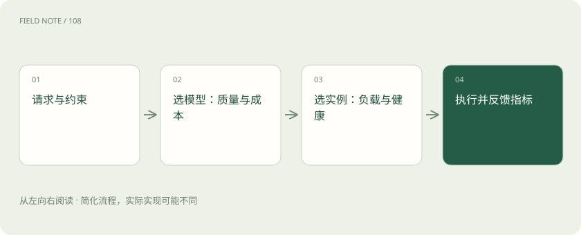

先说这篇在讲什么
公司来了两类任务：简单地整理订单号，以及解释一份复杂合同。它们未必需要同一个模型。选定模型后，若有多个相同副本，还要决定由哪个副本接待。这篇把这两层“交给谁”分开。
先看一个具体例子
给标题分类可优先小模型，复杂合同分析可选能力更合适的模型；涉及合同数据权限时，先过滤不允许的服务，再做成本比较。
遇到陌生概念，可以先读
展开前置阅读建议
打个比方，帮助理解
医院先分科，再决定去哪位医生的诊室。分科像模型选择，排到同科的空闲医生像实例负载均衡；“智能”不代表每次都要另一个大模型来判断。
这是帮助理解的比方，实际过程以正文说明为准。
一图看懂

模型路由：选哪一种本领
可以按任务、语言、是否有图片、材料长度和质量要求选择模型。简单规则容易解释；也可以训练一个判断器帮忙选。但判断器也会出错或花时间，不能把它当作没有成本、永远选对的裁判。
实例路由：同一模型由哪个副本处理
同一个模型可以在多台机器上运行多个副本。请求可以轮流分配，也可以优先给队伍短、状态健康或已有相关缓存的副本。这更像同一品牌有多个服务窗口，不是在更换模型本领。
有缓存的位置，不一定最快
某个副本可能已经处理过相同的前文，可以少算一段；但它的队列也可能很长。路由要比较节省的计算与新增等待，而不是永远把请求塞给缓存最热的那一台。
备用模型不是无损替换
主模型故障时，备用模型可能更弱，或缺少图片和工具能力。系统要先确认备用方案还能完成哪些部分，再决定是否切换。不能把“暂时只给建议”包装成“已经替用户办完”。
读完先记住这一句
模型路由选能力，实例路由安排同一能力的具体接待位置。
别踩这个误区
“最便宜”“最快”“最佳质量”通常不能同时最优，也不存在不需要验证的万能路由器。
想一想
把同模型请求平均发给三个副本，是模型智能选型吗？
这是实例负载均衡；模型本身并未改变。
关联阅读
资料与边界
本文为原创知识讲解。类比和图示经过简化；示例数字不代表实测或报价。整理日期：2026-11-04。文末列出对应技术的原始资料，具体功能与版本支持请以原文为准。
按完整目录逐篇阅读